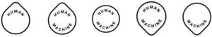

Trade Mark Journal No.2025/047 21 November 2025
WO0000001875267 (16,42)
Office of origin: United Arab Emirates
Date of International Registration:17 June 2025
Date of designation in the UK:
22 September 2025

The mark applied for is for a logo consisting of five components, namely, five shapes with words in a horizontal line, the components being a circular component with a point at the top, in which is the word HUMAN, alongside the same shaped component with the words HUMAN and MACHINE, alongside a circle component with the words HUMAN and MACHINE, alongside which is a circular component with a point at the bottom, in which are the words HUMAN and MACHINE, alongside which is the same shaped component, in which is the word MACHINE.
International priority date claimed: 11 June 2025
(United Arab Emirates)
International priority date claimed: 11 June 2025
(United Arab Emirates)
International priority date claimed: 11 June 2025
(United Arab Emirates)
International priority date claimed: 11 June 2025
(United Arab Emirates)
- Class 16
- Booklets; books; catalogues; diagrams; document files [stationery]; document holders [stationery]; envelopes [stationery]; files [office requisites]; flip charts; forms, printed; graphic prints; graphic representations; graphic reproductions; holders for stamps [seals]; index cards [stationery]; indexes; labels of paper or cardboard; ledgers [books]; magazines [periodicals]; newsletters; newspapers; note books; pads [stationery]; pamphlets; paper sheets [stationery]; paper; pencils; periodicals; photographs [printed]; pictures; printed geographical maps; printed matter; printed publications; printed sheet music; printed timetables; prospectuses; protective covers for books; sealing stamps; seals [stamps]; signboards of paper or cardboard; song books; stationery; stencils; stickers [stationery]; tags for index cards; teaching materials [except apparatus]; transparencies [stationery]; writing paper; academic research reports; charts; decalcomanias; document folders [stationery]; folders for papers; instructional and teaching materials; law and legal reports; legal research reports; loose-leaf binders; manuals [handbooks]; marking stamps; pens; pens (writing instruments) incorporating tips for operating touchscreen devices; printed academic research papers; printed emblems [decalcomanias]; printed research papers; printed research reports; printed teaching and academic materials; ring binders; school and academic supplies [stationery]; teaching and academic manuals; three-dimensional decalcomanias for use on any surface.
- Class 42
- Artificial intelligence consultancy; computer technology consultancy; conducting technical project studies; electronic data storage; graphic arts design; research in the field of artificial intelligence technology; technical writing; technological consultancy; technological consultancy services for digital transformation; technological research; user authentication services using blockchain technology; analysis and evaluation of design and development of products with artificial intelligence; analysis and evaluation of products with artificial intelligence; application service provider (ASP) featuring software to enable or facilitate the uploading, downloading, streaming, posting, displaying, linking, sharing or otherwise providing electronic media or information over communication networks; artificial intelligence technology consultancy; authenticating works of researchers, authors and academics; authentication services of data transmitted via telecommunications, a computer network or via the internet; computer services, namely, creating virtual communities for registered users to participate in discussions and engage in social, business and community networking; computer services, namely, hosting online web facilities for others for organizing and conducting meetings, events and interactive discussions via communication networks; creating and designing website based indexes of information for others [information technology services]; design and development of computer hardware; digitisation of documents [scanning]; digitisation of photographs and images [scanning]; electronic monitoring of research studies; quality evaluation of research reports; quality evaluation of the use of artificial intelligence in research reports; hosting an interactive website and online non-downloadable software; hosting of digital content online; hosting on-line web facilities for others for managing and sharing on-line content; hosting software platforms for research work collaboration; industrial analysis; industrial research services; interactive hosting services to allow users to publish and share their own content and images online; preparation of reports relating to academic research; preparation of reports relating to artificial intelligence and machine learning software related research; preparation of reports relating to chemical research; preparation of reports relating to computer and information technology research; preparation of reports relating to scientific research; preparation of reports relating to technical research; preparation of technological research reports; providing technological information in the field of artificial intelligence; providing technological information relating to artificial intelligence via a website; providing technological information relating to the use of artificial intelligence in research via a website; providing online non-downloadable computer software; providing search engines for obtaining data via communications networks; providing technological information from searchable indexes and databases of information; providing user authentication services for use of artificial intelligence and machine learning software; providing user authentication services for use of artificial intelligence and machine learning software in research; research and development in relation to artificial intelligence; research and development in relation to use of artificial intelligence in academia and research; research in the field of artificial intelligence technology for use in research and design services; research in the field of social media; scientific and technological services and research services; technological consultancy in the field of artificial intelligence and machine learning software, hardware and apparatus; technological consultancy in the field of artificial intelligence enablement in research; technological consultancy in the field of research governance; user authentication services using single sign on technology; advisory, consultancy and information services, relating to all the aforementioned services.
Dubai Future Foundation
Representative: Boult Wade Tennant LLP, Salisbury Square House, 8 Salisbury Square London EC4Y 8AP UNITED KINGDOM